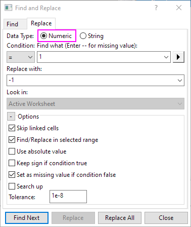

im Dialog Suchen, um den Dialog Suchen und Ersetzen mit aktiver Registerkarte Finden aufzurufen.
im Dialog Suchen, um den Dialog Suchen und Ersetzen mit aktiver Registerkarte Finden aufzurufen.Arbeitsblattdaten können mit Hilfe des Hilfsmittels zum Suchen und Ersetzen durchgeführt werden.
Um den einfachen Dialog Suchen und Ersetzen zu öffnen:
Klicken Sie auf die Schaltfläche im Dialog Suchen, um den Dialog Suchen und Ersetzen mit aktiver Registerkarte Finden aufzurufen.
Wählen Sie Bearbeiten: Ersetzen im Menü, um den Dialog mit aktiver Registerkarte Ersetzen direkt zu öffnen.
Dieses Hilfsmittel arbeitet mit numerischen und Zeichenkettendaten.
|
Verwenden Sie diesen Dialog, um numerische oder Zeichenkettendaten in einem Arbeitsblatt zu suchen.
 oder
oder  können Sie die Tasten Strg + Seiten nach oben/nach unten drücken, um nach dem Vorherigen/Nächsten im ausgewählten Bereich zu suchen.
können Sie die Tasten Strg + Seiten nach oben/nach unten drücken, um nach dem Vorherigen/Nächsten im ausgewählten Bereich zu suchen.Verwenden Sie die Registerkarte Finden, um numerische oder Zeichenkettendaten in einem Arbeitsblatt zu durchsuchen.
| Datentyp |
Legen Sie den zu suchenden Datentyp fest.
|
|---|---|
| Bedingung |
Dies ist nur verfügbar, wenn der Datentyp numerisch ist. Damit können Sie den Operator festlegen, der zum Erstellen der Bedingung verwendet wird. Wenn Sie beispielsweise > aus der Auswahlliste Bedingung wählen und 3 in das Bearbeitungsfeld Suchen (für fehlenden Wert -- eingeben) eingeben, sucht das Hilfsmittel nach Datenwerten, die größer sind als 3.
|
| Suchen (für fehlenden Wert -- eingeben) |
Festlegen des zu suchenden Werts Wenn die Option Numerisch in der Gruppe Datentyp ausgewählt ist, klicken Sie auf die Schaltfläche des nach rechts zeigenden Dreiecks
Wenn die Option Zeichenkette in der Gruppe Datentyp ausgewählt und das Kontrollkästchen Platzhalter verwenden aktiviert ist, klicken Sie auf die Schaltfläche des nach rechts zeigenden Dreiecks
|
| Optionen |
|
| Weiter suchen |
Sucht das nächste Auftreten des Werts, der die Suchbedingung erfüllt. |
| Schließen |
Schließen Sie den Dialog Suchen und Ersetzen. |
Verwenden Sie die Registerkarte Ersetzen, um einen numerischen oder Zeichenkettenwert durch einen anderen zu ersetzen.
|  |
| Datentyp |
Legen Sie den zu ersetzenden Datentyp fest.
|
|---|---|
| Bedingung |
Dies ist nur verfügbar, wenn der Datentyp numerisch ist. Damit können Sie den Operator festlegen, der zum Erstellen der Bedingung verwendet wird. Wenn Sie beispielsweise > aus der Auswahlliste Bedingung wählen und 3 in das Bearbeitungsfeld Suchen (für fehlenden Wert -- eingeben) eingeben, sucht das Hilfsmittel nach Datenwerten, die größer sind als 3.
|
| Suchen (für fehlenden Wert -- eingeben) |
Legt den zu ersetzenden Wert fest. Wenn die Option Numerisch in der Gruppe Datentyp ausgewählt ist, klicken Sie auf die Schaltfläche des nach rechts zeigenden Dreiecks
Wenn die Option Zeichenkette in der Gruppe Datentyp ausgewählt und das Kontrollkästchen Platzhalter verwenden aktiviert ist, klicken Sie auf die Schaltfläche des nach rechts zeigenden Dreiecks
|
| Ersetzen mit |
Legt den neuen Wert fest, der zum Ersetzen der gefundenen Werte verwendet wird. |
| Suchen in |
Legt fest, wo nach dem zu ersetzenden Wert gesucht wird. Diese Option ist nur verfügbar, wenn Suchen/Ersetzen in ausgewähltem Bereich in der Gruppe Optionen deaktiviert ist.
|
| Optionen |
|
| Weiter suchen |
Sucht nach dem nächsten Auftreten des Werts in Suchen (für fehlenden Wert -- eingeben). |
| Ersetzen |
Ersetzt den aktuell gefundenen Wert. |
| Alle ersetzen |
Ersetzt jedes Auftreten des Werts in Suchen (für fehlenden Wert -- eingeben). |
| Schließen |
Schließen Sie den Dialog Suchen und Ersetzen. |